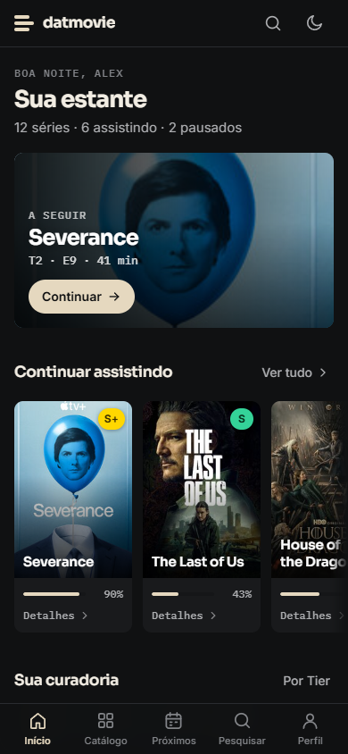
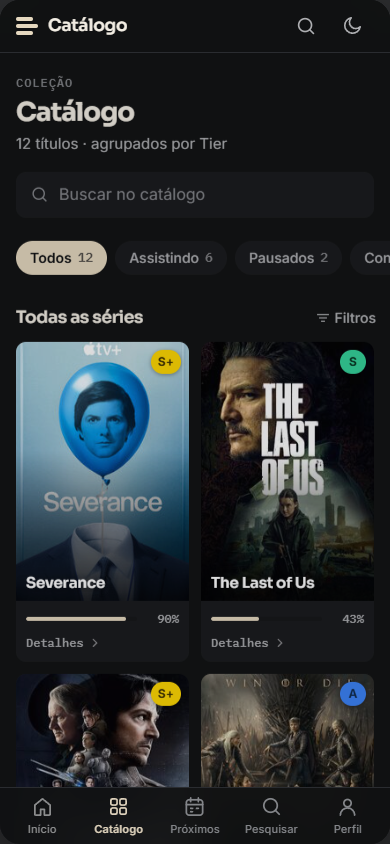
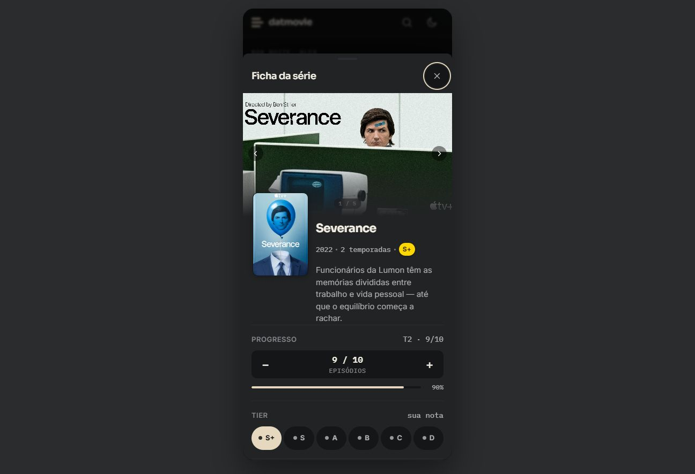
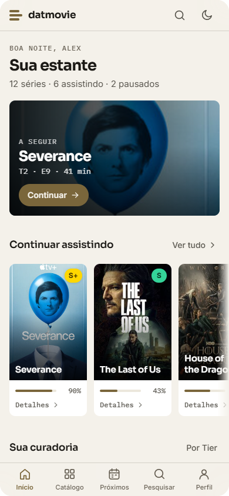
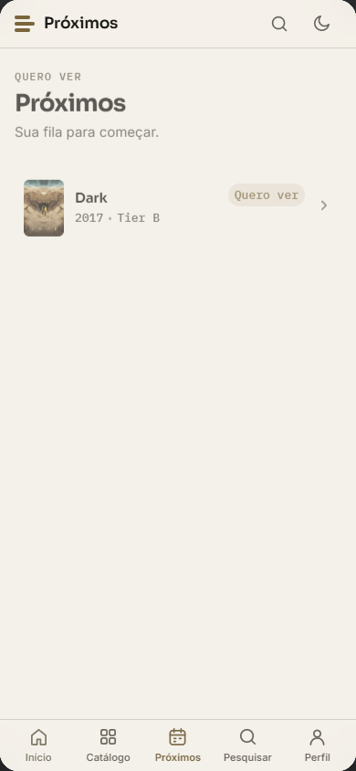
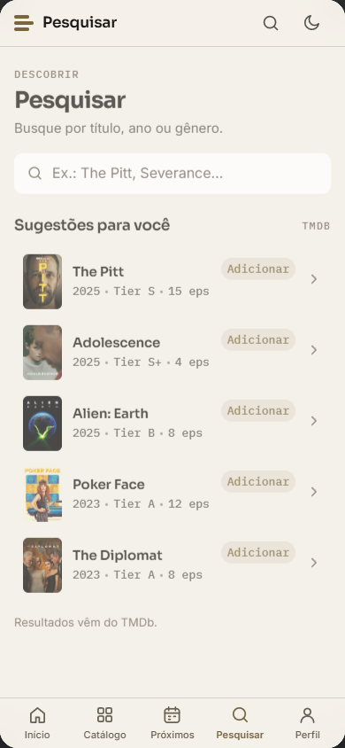
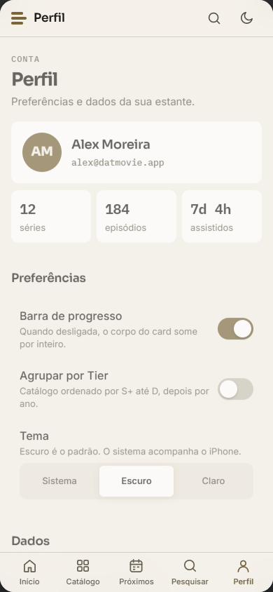

datmovie · iOS mobile-first
Prévia em 390 × 844 · dados de demonstração · uma única página isolada

1 · Início (escuro)Hero, continuar, fila “Quero ver” e estante

2 · Catálogo (escuro)Busca, filtros por status e grade de 2 colunas

3 · FichaTítulo, progresso, Tier em uma linha, pôster e status

4 · Início (claro)Mesma anatomia com paleta areia clara

5 · Próximos (claro)A fila “Quero ver”: o que você decidiu que pretende assistir

6 · Pesquisar (claro)Sugestões e descoberta com adição ao catálogo

7 · Perfil (claro)Preferências de tema e progresso, estatísticas e dados